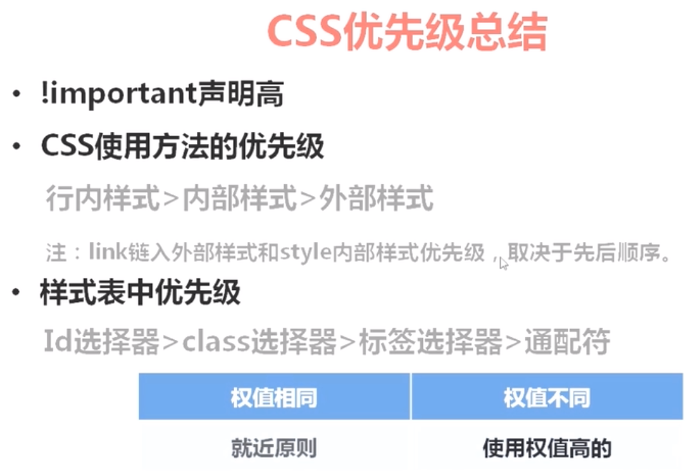

这个p不在上面div里，所以没继承div的样式
有很多标签是自己就自带默认样式的，比如h1标签
h1标签默认样式为：h1{font-size:2em;margin:.67em 0} 2em：基准字体大小的两倍
浏览器有自己的默认字体大小，比如Chrome浏览器默认字体可以通过设置-高级-自定义看到是大小16px
所以h1默认字体大小为16x2=32px
注意：即使上方head处设置了body的样式，body里的h1也并没有继承该样式，h1配合head处设置了的样式是2x12=24px字体，其中2指的是自带字体样式2em，12指的是上方head处给body设置起来的样式为12px
也就是说自带默认样式和上级（设置的）样式冲突，此时会忽略继承得来的样式。
其实层叠很简单
行内样式>内部样式>外部样式
1.链入外部样式表与内部样式表之间的优先级取决于所处位置的先后
2.最后定义的优先级最高（就近原则）
用不同选择器设置样式，这些选择器优先级是怎样的呢？
css优先级总结：
